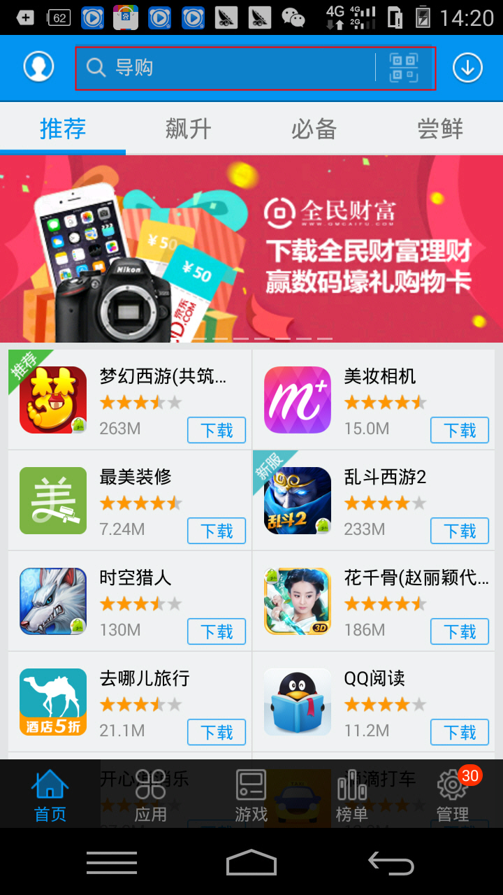
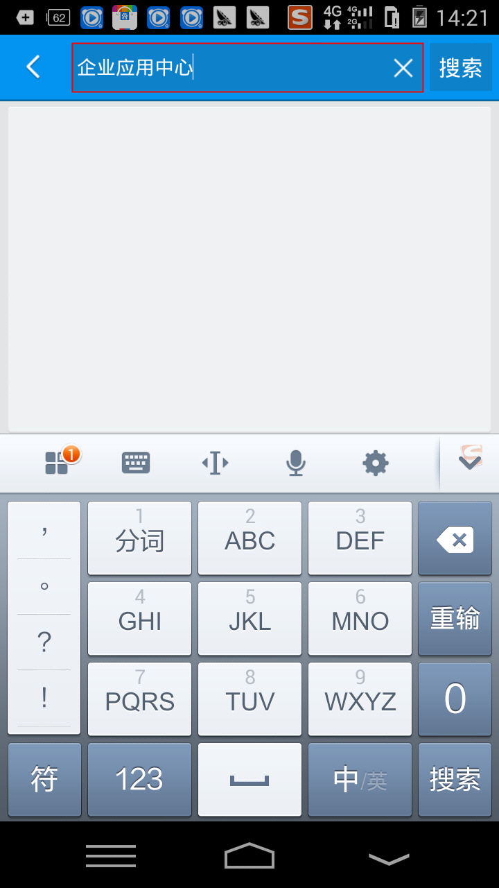
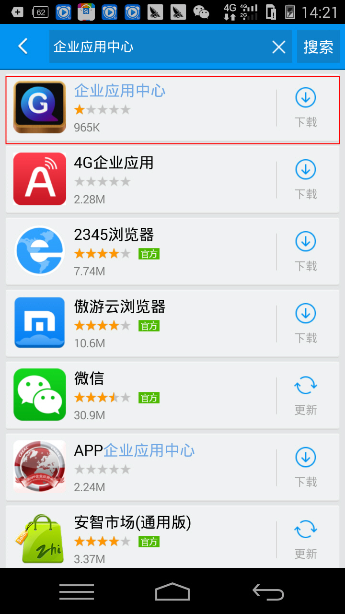
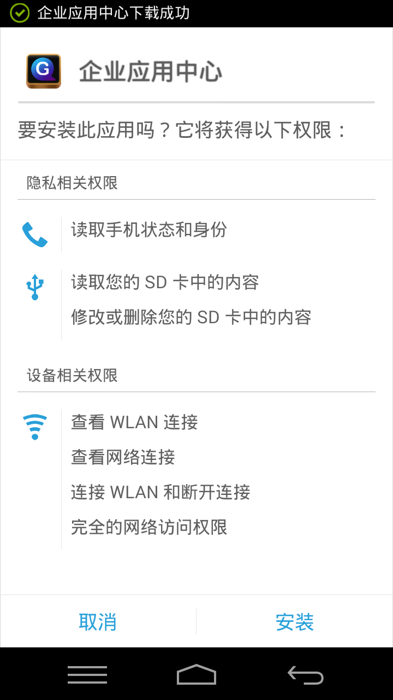
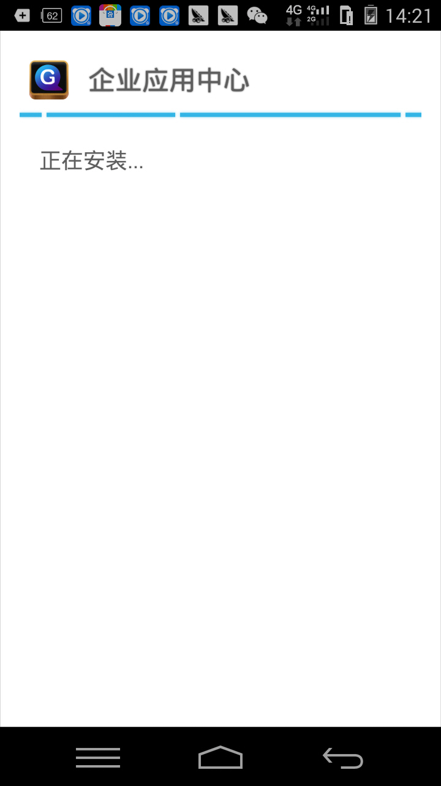
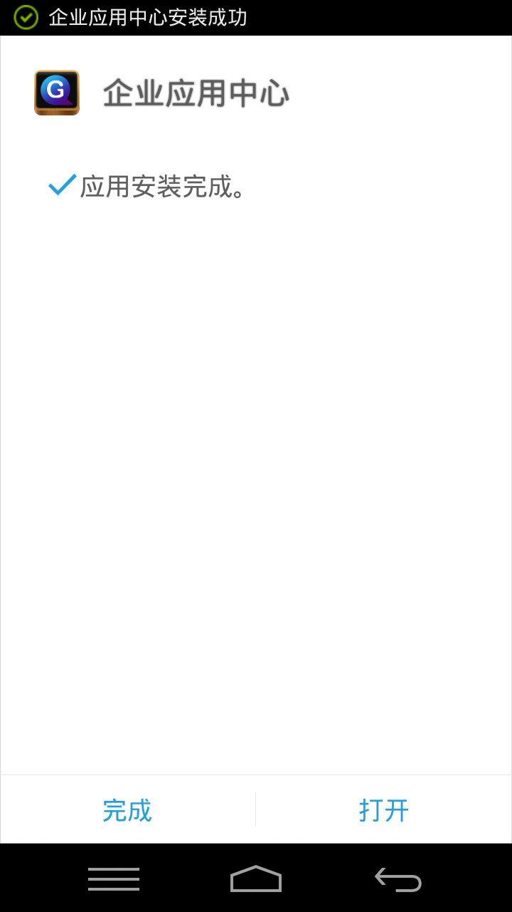
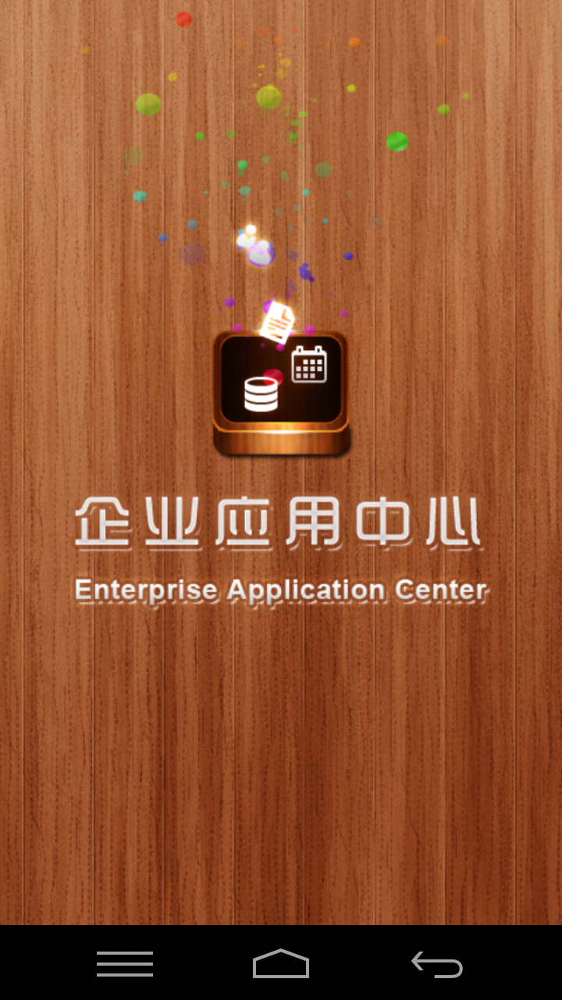

二、下载销售管家企业应用版V4.0系统
操作步骤：
1. 如图1，进入手机功能菜单中点击【安智市场】，进入图2安智市场首页；
2. 在图2安智市场首页中，点击【搜索】，进入图3搜索界面；
3. 如图3所示，在文本框中输入“企业应用中心”，点击“搜索”进入图4；
4. 在图4中点击 “企业应用中心”右侧【下载】按钮进入图5；

6.在图6界面中显示系统安装进度，系统安装成后，进入图7界面；
7.在图7所示，点击【打开】按钮，进入图8；
8.在图8中，进入企业应用中心界面。